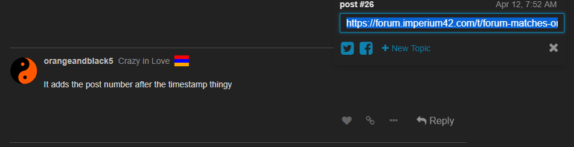

No idea – I don’t know about any of these features mentioned. Post on meta~
2 Likes
o o f.
2 Likes
Alright will do
Thanks 
3 Likes
Post numbers?
https://meta.discourse.org/t/show-post-numbers/66097
Somebody who knows how Discourse works tell me if this will help lol
Seems like a very small tweak
a.post-date span {
margin-right: 1em;
}
a.post-date:after {
content: "#"attr(data-post-number);
}
hmm
It adds the post number after the timestamp thingy

Yeah but this makes it obvious and easy
There’s plenty of ways to get the post number but none are immediately apparent with no extra clicks
3 Likes
There’s also the limited pings as well. When I hosted, you could only ping 10 people. If possible, maybe increase limit slightly?
2 Likes
This is more QoL, but pinging everyone who is alive in your game is a good way of making sure they don’t forget it exists.
We’re probably going to need ‘FoL host’ permissions for this tbh
2 Likes